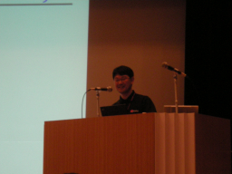

2007年とその先のRuby
- スピーカー
- まつもと ゆきひろ - (株)ネットワーク応用通信研究所 フェロー，(株)楽天 楽天技術研究所 フェロー
- プロフィール
- Rubyのパパ。もう１４年ですよ。
- 講演時間
- 13：00〜14：00
- 講演者による資料
- http://www.rubyist.net/~matz/slides/rk2007-matz/
待ちにまったRubyのパパ、まつもとゆきひろさんの登場です。司会者の紹介が済むと大きな拍手が沸き起こりました。
はじめに
以前はこういうカンファレンスで基調講演をすると、こんな新しい機能できましたーとかそういう話しをすることが多かったけど、ささださんとかがそういう話をするので、自分でしなくなった。困った。 Dave Thomasとネタがカブってしまった。仕方がないのでUnicodeの話をしようと思ったらTim Brayとネタがかぶってしまった。 というわけで、あたらない未来予測が大部分の基調講演に
最初は2人で、コードを一行も書く前に名前が決まっていた。 いまこのカンファレンスに400人
| 1993 | 2人 |
| 2007 | 400人 |
Ruby on Rails
エンタープライズ
NiftyがRuby on Railsを使ったということがプレスリリースされた。 普通、どんなフレームワークを使ったかなんていわないんだけどねぇ
小さい企業から大きな企業までRubyというかRailsに注目 10年間の不遇な時期があった自分としては調子に乗るなよと思ってる。 でも、ゴールドマンサックスに話しにいったり、楽天のフェローになったり、すごいことになっている。
マーケティング効果
- プレスリリース
- 日経BP技術大賞
- 写真がスーツｗ
JavaからRubyへ
from IRC：
13:11 (kakutani) オレオレ 13:11 (kakutani) ロビーで販売しております
かくたにさんのオレオレ発言で爆笑
Pythonを攻撃したりJavaなんてとか言う人がいたりするけど、いまはこれです。
「ぜひ立ち読みを・・・じゃなくて買ってください。」
Rubyは成功したといえるのか？
RailsConfがオレゴンポートランド1400人
2007年はRuby絶頂、これから先は落ちるだけ？
成功？
- Sun Microsystems
- JRuby
- Tim BrayがRubyKaigiに講演しにきたり
- Thoughworks
- 24時間JRubyのサポートサービス
- XRubyの開発の中国人を雇用
- ｔが落ちてるwwww
- CodeGear
- RubyのIDEをつくる
成功したといえるかも
本当？
- RailsJobs
- 会場でRailsでご飯食べてる人結構いる？（写真）去年は10分の1くらい。こんかい3分の1くらいいる？
- RubyJobs
- Rubyだけで仕事してる人は？少ない
- スケーラビリティ
- twitterのメンテナンスしている猫の写真
- Ruby on Railsは猫でも直せるということでしょうか？
- スケーラビリティに課題があるのかも
PHPとの比較
- 結構まけている
- メモリーについては勝ってる
- PHPにさえ負けている（笑）
Unicode
Ask Tim
人間万事塞翁が馬
- 不満があるのはいいことだ
- 不満があれば不満を解決するために考える
- twitterがDBを一つしかつなげらんないじゃんって文句言ったら、DHHがプラグインかけばいいじゃん発言。すぐにプラグインが出来た！
- やれば出来るもん！
- 不満があれば不満を解決するために考える
- 止まると死んでしまう
- オープンソースプロジェクトは走り続けなければならない。Rubyはゆっくりだけど、走りつづけている。
- ユースケースはドライビングフォース
- 2ちゃんねるとかメーリングリストで文句をいわれて落ち込むけど、そんなときにはドライビングフォースだとおもっている。
スケーラビリティ
twitter(1秒に11,000リクエスト)など、実績ができつつある
パフォーマンス
ささださんが何とかしてくれるでしょう
Unicode
M17N、絶賛作業中です。Timが指摘する問題の大半は解決できる目処がたっている。
世の中はUnicodeだけで全てをすまそうとしている。 それでは大変なので、そうではないものができる予定。
メインストリームRuby
Rubyはメインストリームのすみっこに居ることになった。 もうマイナーじゃない。良くも悪くも。
こんな日が来るとは思っていなかった。
これは画期的。
普及vs先進
普及するものと先進的なものとは、歴史的に対立してきた。 みんなが使う言語と、強力だが知られざる言語(なんらかの理由でみんなは使っていない …かっことか)と。
Fortran/Lisp → C++/Eiffel → Java/Ruby
で、『JavaからRubyへ』 - 「普通」の人でも関心を持つ強力な言語となった。 なので「人類の歴史のなかで」画期的。
伝達の力 - power of delivery
日経BP … Rubyとヒートポンプ洗濯機の審査。審査員は大変そうだが。 「Rubyには新しいものはないが、みんなに届けた、という功績がある」 これまでの言語の良いところをパッケージして、届けた。
自由の力 - Power of freedom
「Rubyはみなさんに自由を与えます」
悪いことはできないようにする、という言語も多かった。「オープンクラスなにそれ」
まつもとさんが最大の自由を持ちたくて作った言語。ユーザーも自由を持つ。 Integerを上書きするとか、自分の足を撃つこともできる。撃ったら痛いけど。
信頼の力 - Power of trust
自分を信用してください。自分のやりたいことはやって、自分のすることには責任が持 てる。Rubyに子ども扱いされるのは嫌。
勇気の力 - Power of courage
Stringを書き換えたりArrayを書き換えたり。勇気が要るが、本当に良いと判断できたと きにはそれができる。
愛の力 - Power of Love
Rubyには愛が溢れています。おもに自己愛ですけれども。
Rubyを使う人がHappyになれるように、 Ruby自身にまつもとさんの愛が詰めこまれています。
でも、Ruby教はありませんよ。
希望の光
過去の対立を見ると、Rubyは希望の光なのであります。
高度さをあなたへ
- メタプログラミング
- ガーベコレクション
- 高階関数
- 抽象化
- …
キラーアプリ
- tDiary?
- Ruby on Rails！
Ruby on Rails - Ultimate killer
- 他が霞んじゃう
- Rails 〜 Ruby
- 集中できる
- アプリケーションベンチマークとして使われている
- Rubyのこんなところまで使うのかー、という点で、よいベンチマーク
- アプリケーションベンチマークとして使われている
- 偏っちゃう
- RailsこけたらRubyもこけた、ということにならないように
- 次はなに？ - わからないが
次に備えろ - スケーラビリティ
キーワードはスケーラビリティだろう。
- プログラムサイズ
- 言語デザイナーの想像を越える使われかたをする
- 数千行のプログラムの作成は、小さいプログラムの作成とは質的に違う
- モジュールで対応できるかもしれない
- チームメンバー数
- カタイ方法ならJavaだが、RubyにはRubyのやりかたがあるだろう
- (ネット|DB)アクセス数
- ランタイムでの対応
- マルチコア
- 数年前までは同じソフトでもマシンはどんどん速くなってきた
- 開発をはじめたときは20000行に満たないRubyのコンパイルに20分程度かかっていたが、現在は60000行を越えるコードを数分もかからずコンパイルできる
- 現在は物理的限界に - No more free lunch.
- 光の速度
- 熱密度
- 昔からスパコンはマルチコアだったが、ソフト側で対応しなくちゃいけない
- 言語側で対応できるようにしなくちゃいけない
Rubyの未来
このような現状をふまえつつ - 未来のことはわからないが。
Rubyの明るい未来
- Rubyがもっと広まる
- Rubyで人類が進歩
→「地球幼年期の終わり」
Rubyの暗い未来
- 次の言語が席巻する
- 「そんなものもあったねえ」
- まあ未来への礎になるのも悪くはないか？
じゃあ次の言語は何だ？
- Erlang?
- Ruby conferenceでもとりあげられている
- Scala?
- けっこうがんばっている
- Haskell?
並列性
- Sawzall?
- Fortress?
あるいは:
- Python3000?
- Perl6
- なんでもありますからね
やっぱり:
- Ruby
- 夢はなんですか？
- じいさんになってもRubyしていたい。
Q&A
- Q
- まつもとさんはRailsアプリを書いたことは？
- A
- scaffoldを動かしたことはあります。今度がんばります。
- Q
- 1.9.1のマイルストーンは？
- A
- クリスマスです。1.9の長い道のマイルストーンです。(ささださん:8-9月になんらかのリリースを出したいです)
- Q
- マルチコアのスケーラビリティはどうやって出すの？
- A
- ささださんに任せてあります。が、マルチVMをスレッドにばらまくかプロセスにばらまくかして、dRubyのようなもっと効率の良いものでデータをばらまいて集めるとか。アイディアはあるが手は動かしていない。
IRCでの漫才を眺める聴衆たち。
- Q
- 1.9のリリースの時にChangeLogがほしい。この機能がなくなったとか加わったとか。
- A
- つくります。
- Q
- 2.0はいつ出ますか？現時点でなんとなーくの観測でいいので
- A
- …Perl6の二年後？
- Q
- スケーラビリティの次は？
- A
- 3.0でやりたいこと？どちらかというと実行モデルより実装に基盤が写ってくるだろう。そうするとまつもとさんはやることがなくなりますね。(unak) フェローから浮浪へ。まあ、アスペクト指向とか、Duck typingを維持しながらある程度のチェック機構を追加するとか…
- Q
- 1.9では実装面が重視されているが言語仕様の面で2.0に行く仕様は何か？
- A
- ローカル変数のスコープの整理とか、クラスローカルなスコープとか。キーワード引数はやりたいが仕様が決まらず放置してある。2月の合宿で良いアイディアは出たが家に帰って整理したらだめだった。「居酒屋で話しちゃだめですね」 Selector namespaceなどぼんやり考えていることもありますが。
- Q
- Ruby1.8から1.9.1への移行はスムーズに行きそうか？
- A
- いくつも変わったことはあるが、重箱の隅のようなもの。それほど大変ではないのではないか。
冗談も交えつつ和気藹々とした質疑応答でした。
(ロガー: 前半よう、後半zunda)


Keyword(s):
References:[RubyKaigi2007速報ログ]